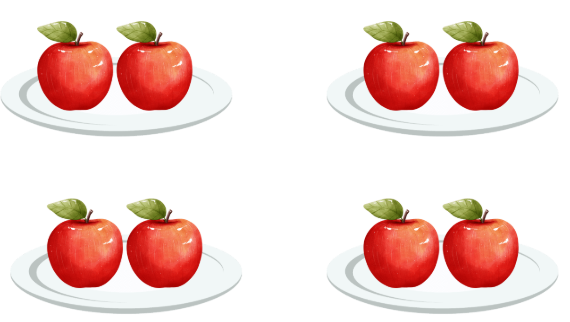
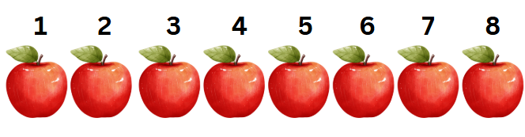
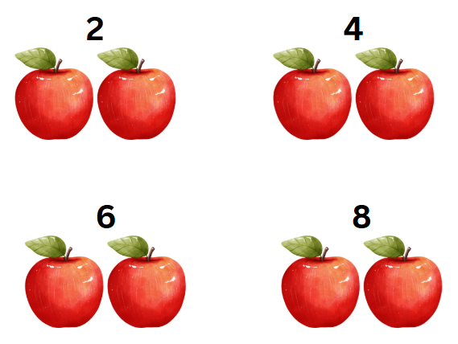
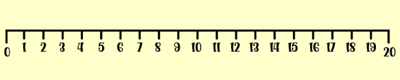
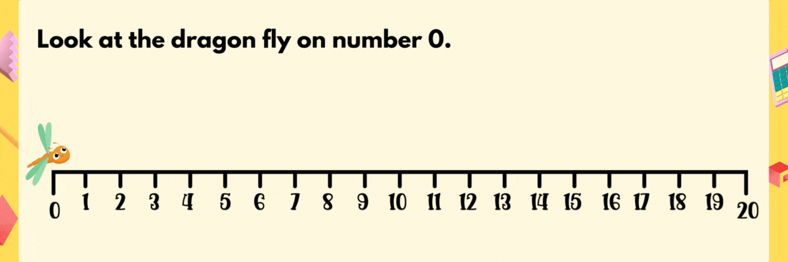

Skip counting is like taking big steps instead of small ones when counting. It helps us find the total faster!
Look at the collection of apples. Each plate has 2 apples, and now you want to find the total number of apples.

If you count them one by one, it might take a while.

Instead, we can skip count by 2s because the apples are grouped in twos: 2, 4, 6 and 8

By the end, you’ll know the total number of apples much faster.
There are 8 apples in total.
Using a Number Line for Skip Counting by 2s
Now let’s use a number line to skip count:
- Think of a little dragon fly hopping along the number line.
- The dragon fly starts at 0 and skips the first number, landing on 2.
- Then it skips another number and lands on 4.
- It keeps hopping in steps of two: 6, 8, 10, 12, 14, 16, 18, 20.
The dragon fly doesn’t stop at every number; it skips and lands only on numbers that are two steps apart.
Skip counting by 2s is useful when items are arranged in pairs or for quick counting in everyday life.
A number line looks like this:

When we skip count by 2s we skip one number and jump to the second number.
Look at the dragon fly.
